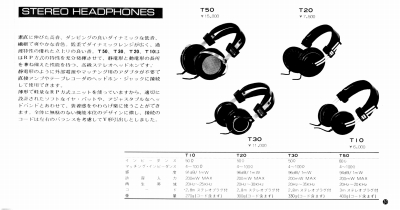

FOSTEX カタログギャラリー
(カタログ画像をクリックすると原寸大のPDFファイルが開きます）
�@1972年市販商品総覧
フォスター時代のカタログ。OEM主体の同社らしくタイトルは「市販商品総覧」となっている。
�A1975年総合カタログ
掲載機種はT50、１機種。
�B1977年4月印刷総合カタログ
掲載機種はT30が加わり、2機種。
�C1977年RPヘッドフォンカタログ
掲載機種はT20・T10が加わり、4機種。この時点でT50のヘットバンドが初期のものから変更されている。
�D1978年9月印刷総合カタログ
掲載機種は4機種。T50のヘットバンドはＴ30と同じタイプのまま。しかし現在まで国内で、オークションなどを含め見かけるのは旧型ばかりだ。再生周波数帯域などはT30以下の下位機種の方が上回るから、あまり流通していないのかもしれない。
